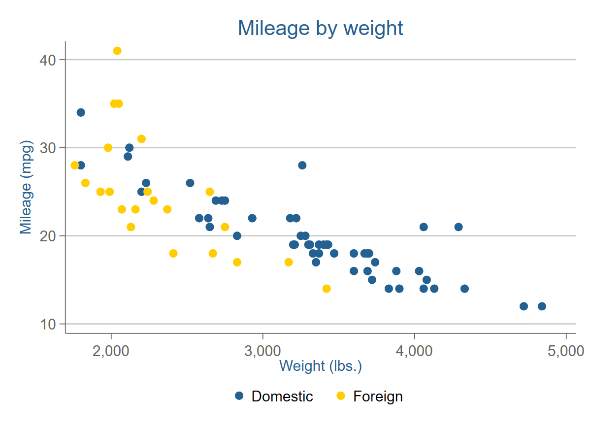
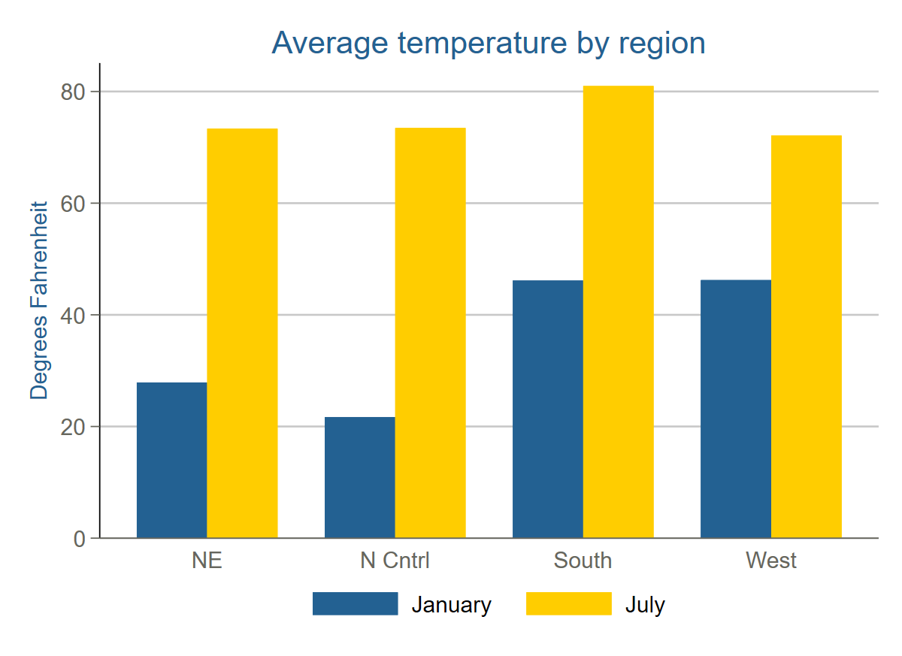

Use the canhr scheme to give Stata graphs the CANHR colors.
Installation
Install the canhr scheme from GitHub:
net install canhr, from("https://raw.githubusercontent.com/rdazadda/CANHR-color-schemes/main/") replaceRunning the same command again updates an existing installation.
To install by hand instead, copy scheme-canhr.scheme
into the s folder of your PLUS directory. Type
sysdir in Stata to see where that is; on Windows it is
usually C:\ado\plus\s\.
Examples
The examples use datasets that come with Stata. The graphs were made
with make_stata_graphs.do.
Scatter plot
sysuse auto, clear
twoway (scatter mpg weight if foreign == 0) ///
(scatter mpg weight if foreign == 1), ///
title("Mileage by weight") ///
legend(order(1 "Domestic" 2 "Foreign"))
Bar chart
sysuse citytemp, clear
graph bar (mean) tempjan tempjuly, over(region) ///
title("Average temperature by region") ///
ytitle("Degrees Fahrenheit") ///
legend(order(1 "January" 2 "July"))
Scheme colors
The scheme gives the first fifteen colors to graph series 1 to 15, in this order.
| # | Color | RGB | Hex |
|---|---|---|---|
| 1 | Blue | 35 97 146 | #236192 |
| 2 | Gold | 255 205 0 | #FFCD00 |
| 3 | Green | 113 152 74 | #71984A |
| 4 | Orange | 223 106 46 | #DF6A2E |
| 5 | Cyan | 135 209 230 | #87D1E6 |
| 6 | Magenta | 244 81 151 | #F45197 |
| 7 | Dark Blue | 17 28 78 | #111C4E |
| 8 | Brown | 119 77 40 | #774D28 |
| 9 | Dark Grey | 102 102 93 | #66665D |
| 10 | Custard | 246 223 164 | #F6DFA4 |
| 11 | Light Blue | 196 207 218 | #C4CFDA |
| 12 | Light Grey | 200 200 200 | #C8C8C8 |
| 13 | Deep Teal | 22 91 99 | #165B63 |
| 14 | Tundra Green | 82 107 70 | #526B46 |
| 15 | Warm Berry | 164 61 82 | #A43D52 |
| 16 | Warm Ivory | 247 244 236 | #F7F4EC |
| 17 | Charcoal | 38 50 56 | #263238 |
| 18 | Muted Gold | 214 170 81 | #D6AA51 |
Stata has fifteen series styles, so colors after the fifteenth are
not given to series automatically. To use any CANHR color for a single
element, give its RGB value, for example
mcolor("35 97 146") for blue markers or
color("214 170 81") for muted gold.